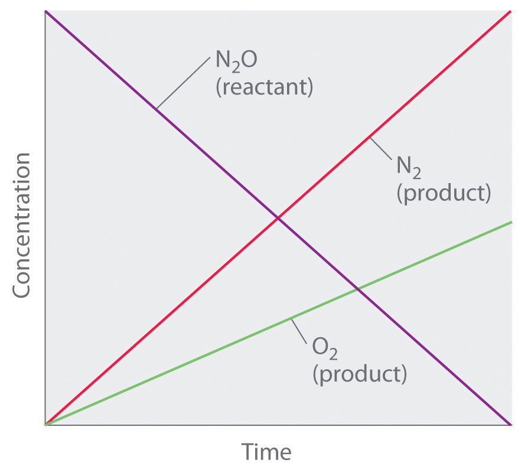
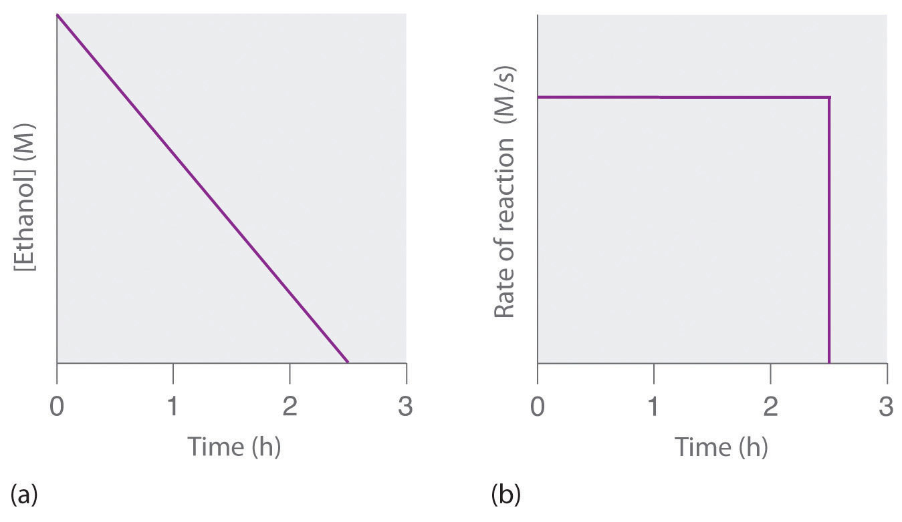
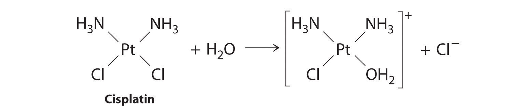
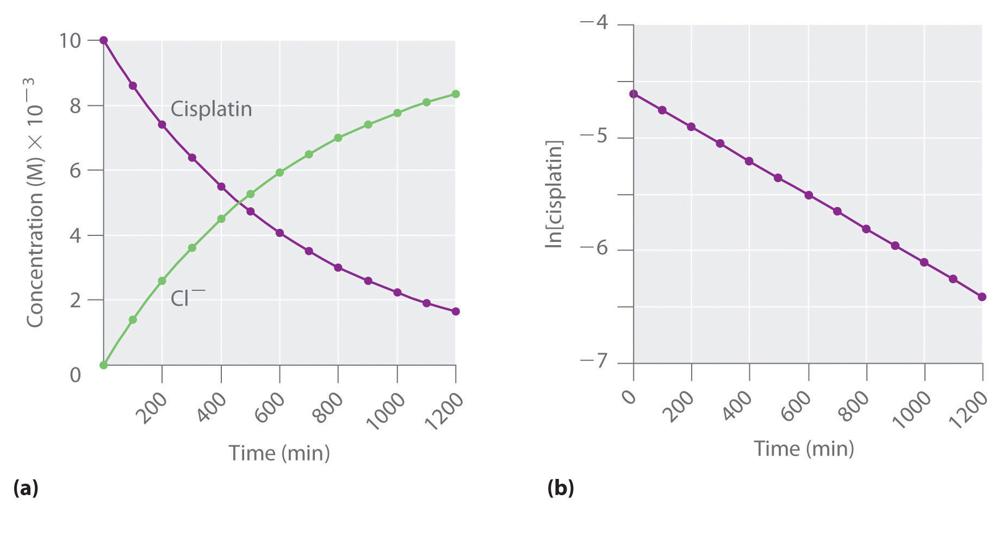
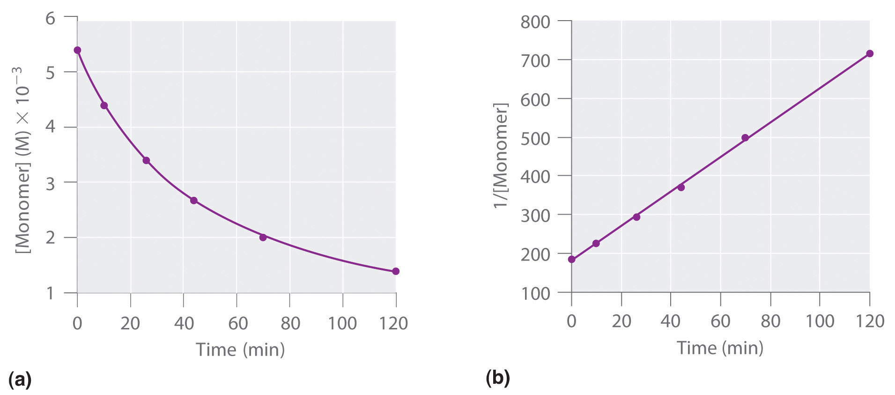

In the examples in this text, the exponents in the rate law are almost always the positive integers: 1 and 2 or even 0. Thus the reactions are zeroth, first, or second order in each reactant. The common patterns used to identify the reaction order are described in this section, where we focus on characteristic types of differential and integrated rate laws and how to determine the reaction order from experimental data.
A zeroth-order reactionA reaction whose rate is independent of concentration. is one whose rate is independent of concentration; its differential rate law is rate = k. We refer to these reactions as zeroth order because we could also write their rate in a form such that the exponent of the reactant in the rate law is 0:
Equation 14.15
Because rate is independent of reactant concentration, a graph of the concentration of any reactant as a function of time is a straight line with a slope of −k. The value of k is negative because the concentration of the reactant decreases with time. Conversely, a graph of the concentration of any product as a function of time is a straight line with a slope of k, a positive value.
The graph of a zeroth-order reaction. The change in concentration of reactant and product with time produces a straight line.
The integrated rate law for a zeroth-order reaction also produces a straight line and has the general form
Equation 14.16
[A] = [A]0 − ktwhere [A]0 is the initial concentration of reactant A. (Equation 14.16 has the form of the algebraic equation for a straight line, y = mx + b, with y = [A], mx = −kt, and b = [A]0.) In a zeroth-order reaction, the rate constant must have the same units as the reaction rate, typically moles per liter per second.
Although it may seem counterintuitive for the reaction rate to be independent of the reactant concentration(s), such reactions are rather common. They occur most often when the reaction rate is determined by available surface area. An example is the decomposition of N2O on a platinum (Pt) surface to produce N2 and O2, which occurs at temperatures ranging from 200°C to 400°C:
Equation 14.17
Without a platinum surface, the reaction requires temperatures greater than 700°C, but between 200°C and 400°C, the only factor that determines how rapidly N2O decomposes is the amount of Pt surface available (not the amount of Pt). As long as there is enough N2O to react with the entire Pt surface, doubling or quadrupling the N2O concentration will have no effect on the reaction rate.At very low concentrations of N2O, where there are not enough molecules present to occupy the entire available Pt surface, the reaction rate is dependent on the N2O concentration. The reaction rate is as follows:
Equation 14.18
Thus the rate at which N2O is consumed and the rates at which N2 and O2 are produced are independent of concentration. As shown in Figure 14.8 "A Zeroth-Order Reaction", the change in the concentrations of all species with time is linear. Most important, the exponent (0) corresponding to the N2O concentration in the experimentally derived rate law is not the same as the reactant’s stoichiometric coefficient in the balanced chemical equation (2). For this reaction, as for all others, the rate law must be determined experimentally.
Figure 14.8 A Zeroth-Order Reaction
This graph shows the concentrations of reactants and products versus time for the zeroth-order catalyzed decomposition of N2O to N2 and O2 on a Pt surface. The change in the concentrations of all species with time is linear.
If a plot of reactant concentration versus time is linear, then the reaction is zeroth order in that reactant.
A zeroth-order reaction that takes place in the human liver is the oxidation of ethanol (from alcoholic beverages) to acetaldehyde, catalyzed by the enzymeA catalyst that occurs naturally in living organisms and catalyzes biological reactions. alcohol dehydrogenase. At high ethanol concentrations, this reaction is also a zeroth-order reaction. The overall reaction equation is
Figure 14.9
where NAD+ (nicotinamide adenine dinucleotide) and NADH (reduced nicotinamide adenine dinucleotide) are the oxidized and reduced forms, respectively, of a species used by all organisms to transport electrons. When an alcoholic beverage is consumed, the ethanol is rapidly absorbed into the blood. Its concentration then decreases at a constant rate until it reaches zero (part (a) in Figure 14.10 "The Catalyzed Oxidation of Ethanol"). An average 70 kg person typically takes about 2.5 h to oxidize the 15 mL of ethanol contained in a single 12 oz can of beer, a 5 oz glass of wine, or a shot of distilled spirits (such as whiskey or brandy). The actual rate, however, varies a great deal from person to person, depending on body size and the amount of alcohol dehydrogenase in the liver. The reaction rate does not increase if a greater quantity of alcohol is consumed over the same period of time because the reaction rate is determined only by the amount of enzyme present in the liver.Contrary to popular belief, the caffeine in coffee is ineffective at catalyzing the oxidation of ethanol. When the ethanol has been completely oxidized and its concentration drops to essentially zero, the rate of oxidation also drops rapidly (part (b) in Figure 14.10 "The Catalyzed Oxidation of Ethanol").
Figure 14.10 The Catalyzed Oxidation of Ethanol
(a) The concentration of ethanol in human blood decreases linearly with time, which is typical of a zeroth-order reaction. (b) The rate at which ethanol is oxidized is constant until the ethanol concentration reaches essentially zero, at which point the reaction rate drops to zero.
These examples illustrate two important points:
In a first-order reactionA reaction whose rate is directly proportional to the concentration of one reactant., the reaction rate is directly proportional to the concentration of one of the reactants. First-order reactions often have the general form A → products. The differential rate for a first-order reaction is as follows:
Equation 14.19
If the concentration of A is doubled, the reaction rate doubles; if the concentration of A is increased by a factor of 10, the reaction rate increases by a factor of 10, and so forth. Because the units of the reaction rate are always moles per liter per second, the units of a first-order rate constant are reciprocal seconds (s−1).
The integrated rate law for a first-order reaction can be written in two different ways: one using exponents and one using logarithms. The exponential form is as follows:
Equation 14.20
[A] = [A]0e−ktwhere [A]0 is the initial concentration of reactant A at t = 0; k is the rate constant; and e is the base of the natural logarithms, which has the value 2.718 to three decimal places. (Essential Skills 6 in Chapter 11 "Liquids", Section 11.9 "Essential Skills 6", discusses natural logarithms.) Recall that an integrated rate law gives the relationship between reactant concentration and time. Equation 14.20 predicts that the concentration of A will decrease in a smooth exponential curve over time. By taking the natural logarithm of each side of Equation 14.20 and rearranging, we obtain an alternative logarithmic expression of the relationship between the concentration of A and t:
Equation 14.21
ln[A] = ln[A]0 − ktBecause Equation 14.21 has the form of the algebraic equation for a straight line, y = mx + b, with y = ln[A] and b = ln[A]0, a plot of ln[A] versus t for a first-order reaction should give a straight line with a slope of −k and an intercept of ln[A]0. Either the differential rate law (Equation 14.19) or the integrated rate law (Equation 14.21) can be used to determine whether a particular reaction is first order.
Graphs of a first-order reaction. The expected shapes of the curves for plots of reactant concentration versus time (top) and the natural logarithm of reactant concentration versus time (bottom) for a first-order reaction.
First-order reactions are very common. In this chapter, we have already encountered two examples of first-order reactions: the hydrolysis of aspirin (Figure 14.6) and the reaction of t-butyl bromide with water to give t-butanol (Equation 14.10). Another reaction that exhibits apparent first-order kinetics is the hydrolysis of the anticancer drug cisplatin.
Cisplatin, the first “inorganic” anticancer drug to be discovered, is unique in its ability to cause complete remission of the relatively rare but deadly cancers of the reproductive organs in young adults. The structures of cisplatin and its hydrolysis product are as follows:
Figure 14.11
Both platinum compounds have four groups arranged in a square plane around a Pt(II) ion. The reaction shown in Figure 14.11 is important because cisplatin, the form in which the drug is administered, is not the form in which the drug is active. Instead, at least one chloride ion must be replaced by water to produce a species that reacts with deoxyribonucleic acid (DNA) to prevent cell division and tumor growth. Consequently, the kinetics of the reaction in Figure 14.11 have been studied extensively to find ways of maximizing the concentration of the active species.
If a plot of reactant concentration versus time is not linear but a plot of the natural logarithm of reactant concentration versus time is linear, then the reaction is first order.
The rate law and reaction order of the hydrolysis of cisplatin are determined from experimental data, such as those displayed in Table 14.2 "Rates of Hydrolysis of Cisplatin as a Function of Concentration at pH 7.0 and 25°C". The table lists initial rate data for four experiments in which the reaction was run at pH 7.0 and 25°C but with different initial concentrations of cisplatin. Because the reaction rate increases with increasing cisplatin concentration, we know this cannot be a zeroth-order reaction. Comparing Experiments 1 and 2 in Table 14.2 "Rates of Hydrolysis of Cisplatin as a Function of Concentration at pH 7.0 and 25°C" shows that the reaction rate doubles [(1.8 × 10−5 M/min) ÷ (9.0 × 10−6 M/min) = 2.0] when the concentration of cisplatin is doubled (from 0.0060 M to 0.012 M). Similarly, comparing Experiments 1 and 4 shows that the reaction rate increases by a factor of 5 [(4.5 × 10−5 M/min) ÷ (9.0 × 10−6 M/min) = 5.0] when the concentration of cisplatin is increased by a factor of 5 (from 0.0060 M to 0.030 M). Because the reaction rate is directly proportional to the concentration of the reactant, the exponent of the cisplatin concentration in the rate law must be 1, so the rate law is rate = k[cisplatin]1. Thus the reaction is first order. Knowing this, we can calculate the rate constant using the differential rate law for a first-order reaction and the data in any row of Table 14.2 "Rates of Hydrolysis of Cisplatin as a Function of Concentration at pH 7.0 and 25°C". For example, substituting the values for Experiment 3 into Equation 14.19,
3.6 × 10−5 M/min = k(0.024 M) 1.5 × 10−3 min−1 = kTable 14.2 Rates of Hydrolysis of Cisplatin as a Function of Concentration at pH 7.0 and 25°C
| Experiment | [Cisplatin]0 (M) | Initial Rate (M/min) |
|---|---|---|
| 1 | 0.0060 | 9.0 × 10−6 |
| 2 | 0.012 | 1.8 × 10−5 |
| 3 | 0.024 | 3.6 × 10−5 |
| 4 | 0.030 | 4.5 × 10−5 |
Knowing the rate constant for the hydrolysis of cisplatin and the rate constants for subsequent reactions that produce species that are highly toxic enables hospital pharmacists to provide patients with solutions that contain only the desired form of the drug.
At high temperatures, ethyl chloride produces HCl and ethylene by the following reaction:
Using the rate data for the reaction at 650°C presented in the following table, calculate the reaction order with respect to the concentration of ethyl chloride and determine the rate constant for the reaction.
| Experiment | [CH3CH2Cl]0 (M) | Initial Rate (M/s) |
|---|---|---|
| 1 | 0.010 | 1.6 × 10−8 |
| 2 | 0.015 | 2.4 × 10−8 |
| 3 | 0.030 | 4.8 × 10−8 |
| 4 | 0.040 | 6.4 × 10−8 |
Given: balanced chemical equation, initial concentrations of reactant, and initial rates of reaction
Asked for: reaction order and rate constant
Strategy:
A Compare the data from two experiments to determine the effect on the reaction rate of changing the concentration of a species.
B Compare the observed effect with behaviors characteristic of zeroth- and first-order reactions to determine the reaction order. Write the rate law for the reaction.
C Use measured concentrations and rate data from any of the experiments to find the rate constant.
Solution:
The reaction order with respect to ethyl chloride is determined by examining the effect of changes in the ethyl chloride concentration on the reaction rate.
A Comparing Experiments 2 and 3 shows that doubling the concentration doubles the reaction rate, so the reaction rate is proportional to [CH3CH2Cl]. Similarly, comparing Experiments 1 and 4 shows that quadrupling the concentration quadruples the reaction rate, again indicating that the reaction rate is directly proportional to [CH3CH2Cl].
B This behavior is characteristic of a first-order reaction, for which the rate law is rate = k[CH3CH2Cl].
C We can calculate the rate constant (k) using any row in the table. Selecting Experiment 1 gives the following:
1.60 × 10−8 M/s = k(0.010 M) 1.6 × 10−6 s−1 = kExercise
Sulfuryl chloride (SO2Cl2) decomposes to SO2 and Cl2 by the following reaction:
SO2Cl2(g) → SO2(g) + Cl2(g)Data for the reaction at 320°C are listed in the following table. Calculate the reaction order with regard to sulfuryl chloride and determine the rate constant for the reaction.
| Experiment | [SO2Cl2]0 (M) | Initial Rate (M/s) |
|---|---|---|
| 1 | 0.0050 | 1.10 × 10−7 |
| 2 | 0.0075 | 1.65 × 10−7 |
| 3 | 0.0100 | 2.20 × 10−7 |
| 4 | 0.0125 | 2.75 × 10−7 |
Answer: first order; k = 2.2 × 10−5 s−1
Figure 14.12 The Hydrolysis of Cisplatin, a First-Order Reaction
These plots show hydrolysis of cisplatin at pH 7.0 and 25°C as (a) the experimentally determined concentrations of cisplatin and chloride ions versus time and (b) the natural logarithm of the cisplatin concentration versus time. The straight line in (b) is expected for a first-order reaction.
We can also use the integrated rate law to determine the reaction rate for the hydrolysis of cisplatin. To do this, we examine the change in the concentration of the reactant or the product as a function of time at a single initial cisplatin concentration. Part (a) in Figure 14.12 "The Hydrolysis of Cisplatin, a First-Order Reaction" shows plots for a solution that originally contained 0.0100 M cisplatin and was maintained at pH 7 and 25°C. The concentration of cisplatin decreases smoothly with time, and the concentration of chloride ion increases in a similar way. When we plot the natural logarithm of the concentration of cisplatin versus time, we obtain the plot shown in part (b) in Figure 14.12 "The Hydrolysis of Cisplatin, a First-Order Reaction". The straight line is consistent with the behavior of a system that obeys a first-order rate law. We can use any two points on the line to calculate the slope of the line, which gives us the rate constant for the reaction. Thus taking the points from part (a) in Figure 14.12 "The Hydrolysis of Cisplatin, a First-Order Reaction" for t = 100 min ([cisplatin] = 0.0086 M) and t = 1000 min ([cisplatin] = 0.0022 M),
The slope is negative because we are calculating the rate of disappearance of cisplatin. Also, the rate constant has units of min−1 because the times plotted on the horizontal axes in parts (a) and (b) in Figure 14.12 "The Hydrolysis of Cisplatin, a First-Order Reaction" are in minutes rather than seconds.
The reaction order and the magnitude of the rate constant we obtain using the integrated rate law are exactly the same as those we calculated earlier using the differential rate law. This must be true if the experiments were carried out under the same conditions.
Refer back to Example 4. If a sample of ethyl chloride with an initial concentration of 0.0200 M is heated at 650°C, what is the concentration of ethyl chloride after 10 h? How many hours at 650°C must elapse for the concentration to decrease to 0.0050 M? (Recall that we calculated the rate constant for this reaction in Example 4.)
Given: initial concentration, rate constant, and time interval
Asked for: concentration at specified time and time required to obtain particular concentration
Strategy:
A Substitute values for the initial concentration ([A]0) and the calculated rate constant for the reaction (k) into the integrated rate law for a first-order reaction. Calculate the concentration ([A]) at the given time t.
B Given a concentration [A], solve the integrated rate law for time t.
Solution:
The exponential form of the integrated rate law for a first-order reaction (Equation 14.20) is [A] = [A]0e−kt.
A Having been given the initial concentration of ethyl chloride ([A]0) and having calculated the rate constant in Example 4 (k = 1.6 × 10−6 s−1), we can use the rate law to calculate the concentration of the reactant at a given time t. Substituting the known values into the integrated rate law,
We could also have used the logarithmic form of the integrated rate law (Equation 14.21):
B To calculate the amount of time required to reach a given concentration, we must solve the integrated rate law for t. Equation 14.21 gives the following:
Exercise
In the exercise in Example 4, you found that the decomposition of sulfuryl chloride (SO2Cl2) is first order, and you calculated the rate constant at 320°C. Use the form(s) of the integrated rate law to find the amount of SO2Cl2 that remains after 20 h if a sample with an original concentration of 0.123 M is heated at 320°C. How long would it take for 90% of the SO2Cl2 to decompose?
Answer: 0.0252 M; 29 h
The simplest kind of second-order reactionA reaction whose rate is proportional to the square of the concentration of the reactant (for a reaction with the general form 2A → products) or is proportional to the product of the concentrations of two reactants (for a reaction with the general form A + B → products). is one whose rate is proportional to the square of the concentration of one reactant. These generally have the form 2A → products. A second kind of second-order reaction has a reaction rate that is proportional to the product of the concentrations of two reactants. Such reactions generally have the form A + B → products. An example of the former is a dimerization reaction, in which two smaller molecules, each called a monomer, combine to form a larger molecule (a dimer).
The differential rate law for the simplest second-order reaction in which 2A → products is as follows:
Equation 14.22
Consequently, doubling the concentration of A quadruples the reaction rate. For the units of the reaction rate to be moles per liter per second (M/s), the units of a second-order rate constant must be the inverse (M−1·s−1). Because the units of molarity are expressed as mol/L, the unit of the rate constant can also be written as L(mol·s).
For the reaction 2A → products, the following integrated rate law describes the concentration of the reactant at a given time:
Equation 14.23
Because Equation 14.23 has the form of an algebraic equation for a straight line, y = mx + b, with y = 1/[A] and b = 1/[A]0, a plot of 1/[A] versus t for a simple second-order reaction is a straight line with a slope of k and an intercept of 1/[A]0.
Second-order reactions generally have the form 2A → products or A + B → products.
Simple second-order reactions are common. In addition to dimerization reactions, two other examples are the decomposition of NO2 to NO and O2 and the decomposition of HI to I2 and H2. Most examples involve simple inorganic molecules, but there are organic examples as well. We can follow the progress of the reaction described in the following paragraph by monitoring the decrease in the intensity of the red color of the reaction mixture.
Many cyclic organic compounds that contain two carbon–carbon double bonds undergo a dimerization reaction to give complex structures. One example is as follows:
Figure 14.13

For simplicity, we will refer to this reactant and product as “monomer” and “dimer,” respectively.The systematic name of the monomer is 2,5-dimethyl-3,4-diphenylcyclopentadienone. The systematic name of the dimer is the name of the monomer followed by “dimer.” Because the monomers are the same, the general equation for this reaction is 2A → product. This reaction represents an important class of organic reactions used in the pharmaceutical industry to prepare complex carbon skeletons for the synthesis of drugs. Like the first-order reactions studied previously, it can be analyzed using either the differential rate law (Equation 14.22) or the integrated rate law (Equation 14.23).
To determine the differential rate law for the reaction, we need data on how the reaction rate varies as a function of monomer concentrations, which are provided in Table 14.3 "Rates of Reaction as a Function of Monomer Concentration for an Initial Monomer Concentration of 0.0054 M". From the data, we see that the reaction rate is not independent of the monomer concentration, so this is not a zeroth-order reaction. We also see that the reaction rate is not proportional to the monomer concentration, so the reaction is not first order. Comparing the data in the second and fourth rows shows that the reaction rate decreases by a factor of 2.8 when the monomer concentration decreases by a factor of 1.7:
Table 14.3 Rates of Reaction as a Function of Monomer Concentration for an Initial Monomer Concentration of 0.0054 M
| Time (min) | [Monomer] (M) | Instantaneous Rate (M/min) |
|---|---|---|
| 10 | 0.0044 | 8.0 × 10−5 |
| 26 | 0.0034 | 5.0 × 10−5 |
| 44 | 0.0027 | 3.1 × 10−5 |
| 70 | 0.0020 | 1.8 × 10−5 |
| 120 | 0.0014 | 8.0 × 10−6 |
Because (1.7)2 = 2.9 ≈ 2.8, the reaction rate is approximately proportional to the square of the monomer concentration.
rate ∝ [monomer]2This means that the reaction is second order in the monomer. Using Equation 14.22 and the data from any row in Table 14.3 "Rates of Reaction as a Function of Monomer Concentration for an Initial Monomer Concentration of 0.0054 M", we can calculate the rate constant. Substituting values at time 10 min, for example, gives the following:
We can also determine the reaction order using the integrated rate law. To do so, we use the decrease in the concentration of the monomer as a function of time for a single reaction, plotted in part (a) in Figure 14.14 "Dimerization of a Monomeric Compound, a Second-Order Reaction". The measurements show that the concentration of the monomer (initially 5.4 × 10−3 M) decreases with increasing time. This graph also shows that the reaction rate decreases smoothly with increasing time. According to the integrated rate law for a second-order reaction, a plot of 1/[monomer] versus t should be a straight line, as shown in part (b) in Figure 14.14 "Dimerization of a Monomeric Compound, a Second-Order Reaction". Any pair of points on the line can be used to calculate the slope, which is the second-order rate constant. In this example, k = 4.1 M−1·min−1, which is consistent with the result obtained using the differential rate equation. Although in this example the stoichiometric coefficient is the same as the reaction order, this is not always the case. The reaction order must always be determined experimentally.
Figure 14.14 Dimerization of a Monomeric Compound, a Second-Order Reaction
These plots correspond to dimerization of the monomer in Figure 14.13 " " as (a) the experimentally determined concentration of monomer versus time and (b) 1/[monomer] versus time. The straight line in (b) is expected for a simple second-order reaction.
For two or more reactions of the same order, the reaction with the largest rate constant is the fastest. Because the units of the rate constants for zeroth-, first-, and second-order reactions are different, however, we cannot compare the magnitudes of rate constants for reactions that have different orders. The differential and integrated rate laws for zeroth-, first-, and second-order reactions and their corresponding graphs are shown in Figure 14.16 "Properties of Reactions That Obey Zeroth-, First-, and Second-Order Rate Laws" in Section 14.4 "Using Graphs to Determine Rate Laws, Rate Constants, and Reaction Orders".
At high temperatures, nitrogen dioxide decomposes to nitric oxide and oxygen.
Experimental data for the reaction at 300°C and four initial concentrations of NO2 are listed in the following table:
| Experiment | [NO2]0 (M) | Initial Rate (M/s) |
|---|---|---|
| 1 | 0.015 | 1.22 × 10−4 |
| 2 | 0.010 | 5.40 × 10−5 |
| 3 | 0.0080 | 3.46 × 10−5 |
| 4 | 0.0050 | 1.35 × 10−5 |
Determine the reaction order and the rate constant.
Given: balanced chemical equation, initial concentrations, and initial rates
Asked for: reaction order and rate constant
Strategy:
A From the experiments, compare the changes in the initial reaction rates with the corresponding changes in the initial concentrations. Determine whether the changes are characteristic of zeroth-, first-, or second-order reactions.
B Determine the appropriate rate law. Using this rate law and data from any experiment, solve for the rate constant (k).
Solution:
A We can determine the reaction order with respect to nitrogen dioxide by comparing the changes in NO2 concentrations with the corresponding reaction rates. Comparing Experiments 2 and 4, for example, shows that doubling the concentration quadruples the reaction rate [(5.40 × 10−5) ÷ (1.35 × 10−5) = 4.0], which means that the reaction rate is proportional to [NO2]2. Similarly, comparing Experiments 1 and 4 shows that tripling the concentration increases the reaction rate by a factor of 9, again indicating that the reaction rate is proportional to [NO2]2. This behavior is characteristic of a second-order reaction.
B We have rate = k[NO2]2. We can calculate the rate constant (k) using data from any experiment in the table. Selecting Experiment 2, for example, gives the following:
Exercise
When the highly reactive species HO2 forms in the atmosphere, one important reaction that then removes it from the atmosphere is as follows:
2HO2(g) → H2O2(g) + O2(g)The kinetics of this reaction have been studied in the laboratory, and some initial rate data at 25°C are listed in the following table:
| Experiment | [HO2]0 (M) | Initial Rate (M/s) |
|---|---|---|
| 1 | 1.1 × 10−8 | 1.7 × 10−7 |
| 2 | 2.5 × 10−8 | 8.8 × 10−7 |
| 3 | 3.4 × 10−8 | 1.6 × 10−6 |
| 4 | 5.0 × 10−8 | 3.5 × 10−6 |
Determine the reaction order and the rate constant.
Answer: second order in HO2; k = 1.4 × 109 M−1·s−1
If a plot of reactant concentration versus time is not linear but a plot of 1/reaction concentration versus time is linear, then the reaction is second order.
If a flask that initially contains 0.056 M NO2 is heated at 300°C, what will be the concentration of NO2 after 1.0 h? How long will it take for the concentration of NO2 to decrease to 10% of the initial concentration? Use the integrated rate law for a second-order reaction (Equation 14.23) and the rate constant calculated in Example 6.
Given: balanced chemical equation, rate constant, time interval, and initial concentration
Asked for: final concentration and time required to reach specified concentration
Strategy:
A Given k, t, and [A]0, use the integrated rate law for a second-order reaction to calculate [A].
B Setting [A] equal to 1/10 of [A]0, use the same equation to solve for t.
Solution:
A We know k and [NO2]0, and we are asked to determine [NO2] at t = 1 h (3600 s). Substituting the appropriate values into Equation 14.23,
Thus [NO2]3600 = 5.1 × 10−4 M.
B In this case, we know k and [NO2]0, and we are asked to calculate at what time [NO2] = 0.1[NO2]0 = 0.1(0.056 M) = 0.0056 M. To do this, we solve Equation 14.23 for t, using the concentrations given.
NO2 decomposes very rapidly; under these conditions, the reaction is 90% complete in only 5.0 min.
Exercise
In the exercise in Example 6, you calculated the rate constant for the decomposition of HO2 as k = 1.4 × 109 M−1·s−1. This high rate constant means that HO2 decomposes rapidly under the reaction conditions given in the problem. In fact, the HO2 molecule is so reactive that it is virtually impossible to obtain in high concentrations. Given a 0.0010 M sample of HO2, calculate the concentration of HO2 that remains after 1.0 h at 25°C. How long will it take for 90% of the HO2 to decompose? Use the integrated rate law for a second-order reaction (Equation 14.23) and the rate constant calculated in the exercise in Example 6.
Answer: 2.0 × 10−13 M; 6.4 × 10−6 s
In addition to the simple second-order reaction and rate law we have just described, another very common second-order reaction has the general form A + B → products, in which the reaction is first order in A and first order in B. The differential rate law for this reaction is as follows:
Equation 14.24
Because the reaction is first order both in A and in B, it has an overall reaction order of 2. (The integrated rate law for this reaction is rather complex, so we will not describe it.) We can recognize second-order reactions of this sort because the reaction rate is proportional to the concentrations of each reactant. We presented one example at the end of Section 14.2 "Reaction Rates and Rate Laws", the reaction of CH3Br with OH− to produce CH3OH.
The number of fundamentally different mechanisms (sets of steps in a reaction) is actually rather small compared to the large number of chemical reactions that can occur. Thus understanding reaction mechanismsThe sequence of events that occur at the molecular level during a reaction. can simplify what might seem to be a confusing variety of chemical reactions. The first step in discovering the reaction mechanism is to determine the reaction’s rate law. This can be done by designing experiments that measure the concentration(s) of one or more reactants or products as a function of time. For the reaction A + B → products, for example, we need to determine k and the exponents m and n in the following equation:
Equation 14.25
rate = k[A]m[B]nTo do this, we might keep the initial concentration of B constant while varying the initial concentration of A and calculating the initial reaction rate. This information would permit us to deduce the reaction order with respect to A. Similarly, we could determine the reaction order with respect to B by studying the initial reaction rate when the initial concentration of A is kept constant while the initial concentration of B is varied. In earlier examples, we determined the reaction order with respect to a given reactant by comparing the different rates obtained when only the concentration of the reactant in question was changed. An alternative way of determining reaction orders is to set up a proportion using the rate laws for two different experiments.
Rate data for a hypothetical reaction of the type A + B → products are given in Table 14.4 "Rate Data for a Hypothetical Reaction of the Form A + B → Products". The general rate law for the reaction is given in Equation 14.25. We can obtain m or n directly by using a proportion of the rate laws for two experiments in which the concentration of one reactant is the same, such as Experiments 1 and 3 in Table 14.4 "Rate Data for a Hypothetical Reaction of the Form A + B → Products".
Table 14.4 Rate Data for a Hypothetical Reaction of the Form A + B → Products
| Experiment | [A] (M) | [B] (M) | Initial Rate (M/min) |
|---|---|---|---|
| 1 | 0.50 | 0.50 | 8.5 × 10−3 |
| 2 | 0.75 | 0.50 | 19 × 10−3 |
| 3 | 1.00 | 0.50 | 34 × 10−3 |
| 4 | 0.50 | 0.75 | 8.5 × 10−3 |
| 5 | 0.50 | 1.00 | 8.5 × 10−3 |
Inserting the appropriate values from Table 14.4 "Rate Data for a Hypothetical Reaction of the Form A + B → Products",
Because 1.00 to any power is 1, [1.00 M]m = 1.00 M. We can cancel like terms to give 0.25 = [0.50]m, which can also be written as 1/4 = [1/2]m. Thus we can conclude that m = 2 and that the reaction is second order in A. By selecting two experiments in which the concentration of B is the same, we were able to solve for m.
Conversely, by selecting two experiments in which the concentration of A is the same (e.g., Experiments 5 and 1), we can solve for n.
Substituting the appropriate values from Table 14.4 "Rate Data for a Hypothetical Reaction of the Form A + B → Products",
Canceling leaves 1.0 = [0.50]n, which gives n = 0; that is, the reaction is zeroth order in B. The experimentally determined rate law is therefore
rate = k[A]2[B]0 = k[A]2We can now calculate the rate constant by inserting the data from any row of Table 14.4 "Rate Data for a Hypothetical Reaction of the Form A + B → Products" into the experimentally determined rate law and solving for k. Using Experiment 2, we obtain
19 × 10−3 M/min = k(0.75 M)2 3.4 × 10−2 M−1·min−1 = kYou should verify that using data from any other row of Table 14.4 "Rate Data for a Hypothetical Reaction of the Form A + B → Products" gives the same rate constant. This must be true as long as the experimental conditions, such as temperature and solvent, are the same.
Nitric oxide is produced in the body by several different enzymes and acts as a signal that controls blood pressure, long-term memory, and other critical functions. The major route for removing NO from biological fluids is via reaction with O2 to give NO2, which then reacts rapidly with water to give nitrous acid and nitric acid:
These reactions are important in maintaining steady levels of NO. The following table lists kinetics data for the reaction of NO with O2 at 25°C:
2NO(g) + O2(g) → 2NO2(g)Determine the rate law for the reaction and calculate the rate constant.
| Experiment | [NO]0 (M) | [O2]0 (M) | Initial Rate (M/s) |
|---|---|---|---|
| 1 | 0.0235 | 0.0125 | 7.98 × 10−3 |
| 2 | 0.0235 | 0.0250 | 15.9 × 10−3 |
| 3 | 0.0470 | 0.0125 | 32.0 × 10−3 |
| 4 | 0.0470 | 0.0250 | 63.5 × 10−3 |
Given: balanced chemical equation, initial concentrations, and initial rates
Asked for: rate law and rate constant
Strategy:
A Compare the changes in initial concentrations with the corresponding changes in rates of reaction to determine the reaction order for each species. Write the rate law for the reaction.
B Using data from any experiment, substitute appropriate values into the rate law. Solve the rate equation for k.
Solution:
A Comparing Experiments 1 and 2 shows that as [O2] is doubled at a constant value of [NO2], the reaction rate approximately doubles. Thus the reaction rate is proportional to [O2]1, so the reaction is first order in O2. Comparing Experiments 1 and 3 shows that the reaction rate essentially quadruples when [NO] is doubled and [O2] is held constant. That is, the reaction rate is proportional to [NO]2, which indicates that the reaction is second order in NO. Using these relationships, we can write the rate law for the reaction:
rate = k[NO]2[O2]B The data in any row can be used to calculate the rate constant. Using Experiment 1, for example, gives
The overall reaction order (m + n) is 3, so this is a third-order reaction, a reaction whose rate is determined by three reactants. The units of the rate constant become more complex as the overall reaction order increases.
Exercise
The peroxydisulfate ion (S2O82−) is a potent oxidizing agent that reacts rapidly with iodide ion in water:
S2O82−(aq) + 3I−(aq) → 2SO42−(aq) + I3−(aq)The following table lists kinetics data for this reaction at 25°C. Determine the rate law and calculate the rate constant.
| Experiment | [S2O82−]0 (M) | [I−]0 (M) | Initial Rate (M/s) |
|---|---|---|---|
| 1 | 0.27 | 0.38 | 2.05 |
| 2 | 0.40 | 0.38 | 3.06 |
| 3 | 0.40 | 0.22 | 1.76 |
Answer: rate = k[S2O82−][I−]; k = 20 M−1·s−1
The reaction rate of a zeroth-order reaction is independent of the concentration of the reactants. The reaction rate of a first-order reaction is directly proportional to the concentration of one reactant. The reaction rate of a simple second-order reaction is proportional to the square of the concentration of one reactant. Knowing the rate law of a reaction gives clues to the reaction mechanism.
zeroth-order reaction
Equation 14.16: [A] = [A]0 − kt
first-order reaction
Equation 14.20: [A] = [A]0e−kt
Equation 14.21: ln[A] = ln[A]0 − kt
second-order reaction
What are the characteristics of a zeroth-order reaction? Experimentally, how would you determine whether a reaction is zeroth order?
Predict whether the following reactions are zeroth order and explain your reasoning.
In a first-order reaction, what is the advantage of using the integrated rate law expressed in natural logarithms over the rate law expressed in exponential form?
If the reaction rate is directly proportional to the concentration of a reactant, what does this tell you about (a) the reaction order with respect to the reactant and (b) the overall reaction order?
The reaction of NO with O2 is found to be second order with respect to NO and first order with respect to O2. What is the overall reaction order? What is the effect of doubling the concentration of each reagent on the reaction rate?
Iodide reduces Fe(III) according to the following reaction:
2Fe3+(soln) + 2I−(soln) → 2Fe2+(soln) + I2(soln)Experimentally, it was found that doubling the concentration of Fe(III) doubled the reaction rate, and doubling the iodide concentration increased the reaction rate by a factor of 4. What is the reaction order with respect to each species? What is the overall rate law? What is the overall reaction order?
Benzoyl peroxide is a medication used to treat acne. Its rate of thermal decomposition at several concentrations was determined experimentally, and the data were tabulated as follows:
| Experiment | [Benzoyl Peroxide]0 (M) | Initial Rate (M/s) |
|---|---|---|
| 1 | 1.00 | 2.22 × 10−4 |
| 2 | 0.70 | 1.64 × 10−4 |
| 3 | 0.50 | 1.12 × 10−4 |
| 4 | 0.25 | 0.59 × 10−4 |
What is the reaction order with respect to benzoyl peroxide? What is the rate law for this reaction?
1-Bromopropane is a colorless liquid that reacts with S2O32− according to the following reaction:
C3H7Br + S2O32− → C3H7S2O3− + Br−The reaction is first order in 1-bromopropane and first order in S2O32−, with a rate constant of 8.05 × 10−4 M−1·s−1. If you began a reaction with 40 mmol/100 mL of C3H7Br and an equivalent concentration of S2O32−, what would the initial reaction rate be? If you were to decrease the concentration of each reactant to 20 mmol/100 mL, what would the initial reaction rate be?
The experimental rate law for the reaction 3A + 2B → C + D was found to be Δ[C]/Δt = k[A]2[B] for an overall reaction that is third order. Because graphical analysis is difficult beyond second-order reactions, explain the procedure for determining the rate law experimentally.
First order in Fe3+; second order in I−; third order overall; rate = k[Fe3+][I−]2.
1.29 × 10−4 M/s; 3.22 × 10−5 M/s